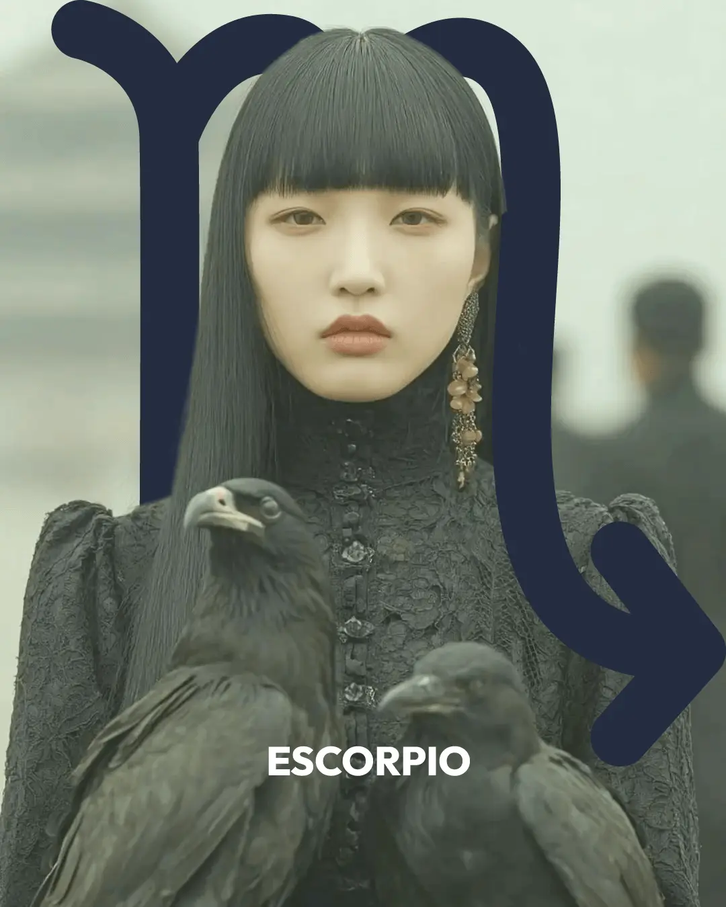

Spotify

Aquí está lo infinito, lo que resiste y persiste más allá de la muerte y la vida, más allá del dolor y el padecimiento. Una esencia guardada entre la negrura de la carne, un pulso vivo que nos toma y nos lleva de las narices hacia nuestro destino. Acá está la experiencia cruda del poder, que viene siempre de otro lado para llevarnos de la mano hacia nuestro destino.
Pero también aparece aquí el miedo, el terror profundo a entregarnos a lo que nos gobierna desde adentro, el control con el que evitamos que la vida nos lleve de las narices hacia donde quiera. El deseo, voluptuoso, se apodera de nuestra carne y nos lleva hacia donde no sabíamos que había un mundo, hacia un más allá de placer y éxtasis que nos aterra y nos atrae y nos aterra. Escorpio es el camino difícil y alejarse de esta energía es un pulso inevitable. Pero esa distancia hace que nuestro dolor quede huérfano, sin el abrigo de lo real, de lo humano, hace que nuestro dolor quede adentro y permanezca sin poder ser procesado..
La muerte también tiene su encanto, su magnetismo, su fuerza cruda que nos convoca. Deseamos acercarnos a su regazo, regodearnos con su inmunda cercanía. Anhelamos secretamente ese más allá, esa dimensión misteriosa que está del otro lado de la muerte. Pero Escorpio nos recuerda que todo aquel más allá es parte de nuestro mundo, que es posible contactar de mil modos con ese mundo debajo del mundo. La brujería, la psicología, la magia son formas en las que este signo nos abre espacios de encuentro con el misterio crudo.
No es necesario morir para acercarse a lo extático, al éxtasis del encuentro con lo vivo y con la vida. No es necesaria la muerte para entrar en contacto con esa dimensión intangible del mundo que está contenida en la sustancia. Ese es el poder en escorpio, que nos permite mirar con otros ojos el mundo, abrir los ojos en medio de la oscuridad para escuchar el silencio.
Siempre hay más adentro
La profundidad guarda un misterio invisible, escondido en la negrura de la sustancia. Viscosa y densa, la verdad espera ser desenterrada. No hay fórmulas tranquilizadoras aquí, apenas una realidad cruda que nos atrae, nos magnetiza y nos asusta con la misma intensidad. De poco sirve pensar en la imágen de un águila para graficar la elevación de esta energía: su potencia está en la profundidad, su fuerza en la oscuridad. Cuando nos retiramos de lo profundo, dejamos que el dolor y la depravación hagan allí su nido. El silencio se llena con lo que callamos, la oscuridad se atiborra de cosas que no queremos ver. Entonces sí, finalmente, la profundidad es pestilente.
Sufrir y gozar
La idea de lo tóxico juzga en los demás una intensidad que ponemos afuera porque no podemos asumir como propia. Cuando juzgamos eso en otrxs, al mismo tiempo nos disciplinamos. Claro que darle espacio a los celos, la envidia, y otras pasiones tristes como esa construye una vida organizada en el dolor, pero no es menos cierto que las intensidades que se hacen de padecimiento tienen un permiso social mucho mayor que las intensidades de placer. Está mejor visto sufrir que gozar.
El agua
En este signo también está presente la pertenencia y la sensibilidad, la necesidad de ser parte de espacios más amplios que nos protejan y garanticen nuestra supervivencia. El dramatismo y la intensidad emocional están también ligados a esa sustancia acuática que es el corazón de este signo. Podemos pensar en un pantano, tan lleno de vida que apesta a muerte.
Si no sabés qué tenés en Escorpio...
Si no sabés qué tenés en Escorpio...
Buscá este símbolo en tu carta:
Si no sabés cuál es el planeta que está en Escorpio porque no conocés el símbolo, fijate en los nombres de cada planeta que aparecen abajo.
Los Planetas
El Sol
El Sol
Con el Sol en Escorpio todas estas temáticas también aparecen, pero no ligadas a la seguridad emocional. Hay un poco más de organicidad posible, si la Luna está en otro signo.
Una de las grandes marcas del Sol en Escorpio es la tendencia a decir lo que nadie quiere escuchar. La pregunta que saca a la luz lo que estaba escondido bajo la alfombra. El ojo para ver lo que el otro se está ocultando a sí mismo. A veces desde un lugar amoroso — che, me parece que estás pensando cualquier cosa y te va a ir mal con eso. A veces desde un lugar más oscuro — el placer de pincharle el globo al otro, de generarle incomodidad. Las dos caras son escorpianas.
En el corazón de lo escorpiano está la entrega: a una dimensión que está más allá de lo visible, de lo entendible. El alma y el cuerpo animal, los dos extremos de lo excesivo. Nadie elige amar lo que ama, nadie elige las pasiones que tiene. Y eso, que no se controla, que no se maneja, genera una enorme reacción de control. Retenga todo para que nada se escape.
El miedo a entregar es el gran obstáculo de este Sol. Porque cuando algo se abre y circula, aparece lo excesivo, lo que toma, lo que transforma. Y eso es profundamente conmovedor. Hay algo en Escorpio que tiende a construir identidad en otro lugar antes de encontrarse con la propia energía escorpiana. Esa apropiación suele ocurrir en un segundo momento de la vida.
La intuición y el olfato son extraordinarios. La capacidad de ver a través de las superficies, de leer las tramas de fondo, de saber cuándo algo no cuadra. Esa lucidez puede usarse para acompañar o para herir. El Sol en Escorpio tiene esa elección permanente.
La Luna
La Luna
La Luna en Escorpio construye seguridad emocional en la intensidad. Para este signo es más fácil estar muriendo o resucitando que simplemente viviendo. Entonces la luna busca ese lugar: el conflicto, el sufrimiento, la tensión. No desde una elección consciente, sino desde algo que funciona como sustancia segura. Sufro porque mi familia sufre, y en ese sufrimiento compartido soy parte. Somos parte porque sufrimos.
El conflicto también da seguridad. Si no hay ninguna tensión que resolver, algo se siente incompleto. En esa intensidad permanente hay algo estable.
Hay también una imagen muy fuerte para esta luna: una cuna al lado del mar. Cuando la marea crece, el bebé se ahoga. Cuando baja, el bebé siente la ausencia y se siente desprotegido. No te vayas, mamá. Dame aire, mamá. Esa ambivalencia — entre el ahogo y el desamparo — es una de las marcas más profundas de la Luna en Escorpio.
La culpa es otra gran palabra de esta posición. La satisfacción genera culpa. Hasta cierto grado de maduración, encontrar placer activa la sensación de que algo prohibido está pasando. La culpa puede tomar muchas formas: el castigo que gatilla un deseo, la incomodidad con el propio deseo, la ilegalidad como condición erótica.
Junto con la culpa aparece el poder. Hay un sensor muy desarrollado para las tramas de poder en los vínculos — la sensación de quedar atrapada, de quedar en el lugar de víctima. Y una tendencia a retener: emociones, enojos, rencor. Un rencor antiguo que no se va, que se queda ahí, que construye.
La capacidad de permanecer en el malestar sin desviar la mirada es enorme. Puedo quedarme aquí, viviendo esto. Esa cualidad, cuando encuentra un cauce propio — el trabajo terapéutico, el contacto con el mundo emocional de otros, la sexualidad, las artes intensas — se vuelve un recurso extraordinario.
Mercurio
Mercurio
Mercurio en Escorpio no es un Mercurio extrovertido. No es el alma de la fiesta ni el que hace chistes en las reuniones. Habla en la intimidad, en profundidad, cuando hay un vínculo real.
Lo que este Mercurio hace es ir al infierno y salir tranquilo. Como el Mercurio mitológico que se metía en el Hades y volvía como si nada. Tiene una capacidad muy particular de dialogar con lo inconsciente, con el dolor, con lo que está escondido abajo. Un buen Mercurio para psicólogxs, para personas que trabajan con lo emocional, para quienes pueden hablar de las cosas incómodas que a los demás les perturba nombrar.
Rompe tabúes. Nombra lo que está callado. Y muchas veces potencia la duda — porque nunca sé si lo que voy a decir le va a generar malestar a alguien. Esa tensión entre la capacidad de ver y la pregunta de si decirlo o no es uno de los grandes dilemas de este Mercurio.
Venus
Venus
Venus en Escorpio valora la intensidad. Los flujos más fuertes y profundos son los que traen placer y disfrute. La seducción tiene mucho de magnetismo — y la persona se siente igualmente magnetizada por ciertas presencias.
Lo que atrae: la transgresión, cierto tipo de poder, las personas que llevan algo oscuro o misterioso. La relación con el poder en los vínculos es central y muy significativa. ¿Quién somete a quién? La historia amorosa de la familia opera muy fuerte: lo que hizo mi abuelo con mi abuela, lo que se repite, lo que se quiere revertir.
También se disfruta el conflicto en el vínculo. No como la luna que lo necesita para sentirse segura, sino como algo que genera un erotismo propio.
Los placeres corporales son intensos. El trabajo y los recursos suelen estar vinculados con lo íntimo, lo sensible, lo inconsciente.
Marte
Marte
Marte en Escorpio está en domicilio, pero es un Marte que tiende a quedar escondido. En general hay una tendencia a querer demostrar que no tenemos Marte en Escorpio, a hacer todo lo posible para que no se note. Ya viene de modo natal adentro del sótano, y hay que aprender a darle cauces.
El enojo de Marte en Aries aparece y se va. El de Marte en Escorpio muchas veces no aparece — y muchas veces no se va. Se queda ahí. El rencor, el resentimiento, la memoria del daño recibido pueden volverse el combustible de la acción.
La espada de este Marte pelea contra los dragones, contra el dolor de la historia, contra las tinieblas propias y ajenas. Puede ser la espada del terapeuta que permanece firme mientras alguien se desarma. La del médico que abre el cuerpo para sacar lo que daña. La del trabajador social que se queda en donde otros no pueden quedarse.
Pero también puede ser una espada que pelea desde el rencor, que castiga con la misma crueldad con la que fue castigada. La crueldad en algún punto de la historia de la persona con Marte en Escorpio suele aparecer — o como algo padecido, o como algo ejercido, o ambas cosas.
En el mejor destino: la potencia de permanecer frente al dolor sin desviar la mirada, acompañándolo y transformándolo. Hacerle bien al bien y mal al mal.
La energía pulsional es enorme y se destila mucho desde lo sexual. También puede encontrar cauce en lo esotérico, en el misterio, en lo oculto.
Júpiter
Júpiter
Júpiter en Escorpio encuentra el sentido en las profundidades. En lo invisible, lo intangible, lo esotérico. En el linaje, la historia familiar, el clan. En la muerte, en sobrevivir a la muerte, en la posibilidad de sobreponerse.
El saber es poder. Saber y verdad están profundamente ligados a lo que da potencia. El conocimiento del inconsciente, de lo que está detrás de las cosas, de las tramas ocultas.
La maestría de este Júpiter es la maestría sobre lo invisible. Lo que enseño es sobre lo que no se ve. Eso es lo que expande: entrar en contacto con lo sutil, con lo intangible, con lo que mueve el mundo por debajo de la superficie.
Los referentes jupiterianos pueden ser figuras del linaje o entidades esotéricas. La iawaska, el San Pedro, los registros akáshicos, los ancestros que se aparecen. Lo que orienta y da sentido cuando uno está perdido en la oscuridad no siempre viene del mundo racional.
La libertad tiene algo paradójico: puede ser la libertad respecto de los propios mecanismos emocionales, de la prisión de la historia familiar. Pero también puede ser la libertad de poder encerrarse cuando hace falta. Si quiero recaigo, dice Júpiter en Escorpio.
Saturno
Saturno
Saturno en Escorpio trae crueldad. No necesariamente en el sentido moral, sino en el sentido de que la autoridad, el límite, la estructura tienen un dejo de eso. Poner un límite se siente como lastimar al otro.
Hay algo de un padre que pide lealtad al clan, fidelidad a la historia familiar, que puede excederse en sus demandas. Esa figura deja marcas en relación al poder y a la potencia personal: ser potente es ser un tirano. Entonces mejor no ser potente.
El gran trabajo de Saturno en Escorpio es desarrollar la distinción: puedo tener poder sin ser cruel. Puedo poner límites sin destruir al otro. Puedo desplegar la potencia sin convertirme en aquello que me dañó.
Las restricciones también pueden aparecer en lo sexual — dificultades en el encuentro con la propia sexualidad, por toda clase de razones. O por el camino inverso: una profunda maestría en ese campo, nacida del trabajo con esas restricciones.
La mochila del inconsciente puede ser pesada. Pero Saturno en Escorpio genera resiliencia. Una capacidad de aguantar lo que otros no pueden aguantar, que en su lugar más prodigioso se convierte en una valija de herramientas terapéuticas que nacen de una maestría muy visceral: si no desarrollo esta maestría, estoy hecho.
Quirón
Quirón
Quirón en Escorpio trae heridas vinculadas con el linaje, el clan, la genealogía, la pertenencia. No hay una persona herida en la familia — hay una herida familiar. Lo que falta suele estar en la memoria y en la historia: un pariente que padeció el sometimiento, que fue oprimido, que no pudo. También puede ser lo contrario — alguien que ejerció el abuso de poder, que estuvo del lado del opresor.
Hay también heridas más colectivas: marginación social, segregación, heridas de pueblos, persecuciones históricas. El holocausto, las dictaduras, la opresión racial pueden estar muy presentes.
Específicamente aparece lo sexual y el abuso. Historias de abuso en la madre, en el padre, en distintos ancestros. La diferencia con Quirón en Tauro: en Escorpio la experiencia de abuso se vive más como traición y desProtección. Mi familia no me cuidó y por eso padecí lo que padecí. Y muchas veces el abuso tiene eco en la historia familiar — no es solo mi experiencia, es un patrón que se repite.
El silencio y los secretos también están presentes. Los secretos me dañan y me lastiman — entonces no puedo guardar nada, o por el contrario, todo se convierte compulsivamente en secreto.
El intento de recuperar lo perdido suele pasar por reparar, corregir, enmendar lo que está roto en la familia. Spoiler: no se puede. Y también puede pasar por acumular el poder que faltó — si en mi familia faltó dinero, busco dinero; si faltó poder, busco poder.
Las disfunciones sexuales o dificultades en la fertilidad pueden reactualizar la herida. La inhibición en la construcción de intimidad también. El poder como algo que da terror o como algo que se anhela desproporcionadamente.
La empatía con la marginalidad social suele ser muy fuerte. Trabajadorxs sociales, activistas en causas de vulneración de derechos, personas que acompañan situaciones de cárcel o de pobreza extrema. Quirón en Escorpio, cuando despliega al sanador herido, puede ofrecer una comprensión del dolor ajeno que muy pocas posiciones tienen.
Urano
Urano
Urano en Escorpio o en casa 8 trae transformaciones profundas en el ámbito de la sexualidad, la muerte, la transgresión, los modos de pertenencia familiar. Hay una energía muy transgresora que tensa los códigos y cánones que inhiben la sexualidad. La liberación sexual como proceso social está muy vinculada con esta posición.
A nivel individual puede ir para dos lados: ser el traidor del linaje — todos en la familia son zapateros y yo me voy al Congo a vender duraznos fritos — o ser quien va a mirar lo más profundo de la historia del árbol genealógico, con la figura del antrópolõgo, el detective, el médico forense.
Hay algo muy detectivesco en este Urano. Una capacidad de pensar velozmente todo lo que pasó en una escena, leer las tramas de poder con mucha inteligencia. Muy apto para la política cuando se trata de gestión real, de habilidad para manejarse en estructuras de poder.
Urano en Escorpio es la generación nacida entre 1974 y 1981 aproximadamente.
Neptuno
Neptuno
Neptuno en Escorpio o en casa 8 liga el erotismo neptuniano más primario con la sexualidad escorpiana. Puede dar la demisexualidad: solo puedo compartir mi sexualidad cuando hay amor, cuando hay una intimidad real y profunda.
En su lugar más potente: una apertura muy profunda en el encuentro sexual, una fluidez y una fusión que disuelve los límites entre los cuerpos y las almas.
Pero puede también traer una mirada muy moralizante respecto de la sexualidad. Las dos cosas conviven en esta posición.
El desborde del linaje es otro gran tema. Las historias de la historia familiar me inundan, no puedo ponerles límite, me cuesta distinguir qué es mi inconsciente y qué es el inconsciente de mi familia. Me invade todo el tiempo ese dolor ancestral y me cuesta encontrar el corte.
Como defensa puede aparecer el aislamiento, el repliegue, la cueva. Neptuno en Escorpio puede traer una gran apertura o una tendencia muy fuerte al encerramiento, según el momento de desarrollo y el nivel de herramienta disponible.
Plutón
Plutón
Plutón estuvo en Escorpio entre 1983 y 1995 aproximadamente. Todas las personas de esta generación son plutonianas — es muy difícil que no lo sean. Lis Green dice que esta generación va a transformar el mundo de manera radical. Del mismo modo que Lutero, con Plutón en Escorpio, transformó el corazón de la cosmovisión de su época, esta generación transformará el corazón de la nuestra.
La pregunta es cuál es ese corazón. ¿El capital financiero? ¿La relación humano-planeta? Ya lo veremos. Estamos llegando a la edad del poder — 40 y pico, los 50 según algunos — y empezando a ser la generación que gestiona los estados.
A nivel personal, Plutón en Escorpio trae una relación muy profunda con la densidad, lo oscuro, lo oculto. Y una tendencia a identificarse con eso: yo soy el que lo hizo mal, yo soy el malo de la película. Una densidad que puede sentirse como constitutiva de la propia identidad.
La culpa funciona como mantita de protección. El encierro, el control, la posesión pueden ser modos de producir seguridad emocional. Construyo seguridad ejerciendo poder.
El desafío es poder transformar esa relación con la propia potencia — encontrar que la intensidad escorpiana no necesariamente destruye, sino que puede ser el motor de una transformación profunda y real.
Nodo Norte · Nodo Sur
Nodo Norte · Nodo Sur
Nodo Norte en Escorpio / Nodo Sur en Tauro
Con el nodo sur en Tauro, el lugar de seguridad está en lo concreto, lo tangible, lo material. La sustancia, el cuerpo, el placer sensorial. Ese talento está disponible — pero el camino del alma va hacia el otro lado.
El nodo norte en Escorpio invita a descubrir la dimensión de lo intangible: lo invisible que mueve lo concreto. El poder, la sexualidad, lo esotérico, lo inconsciente. Para poder desplegarme en eso intangible, voy a necesitar primero construir cierta solidez desde el nodo sur — un cuerpo, un oficio, una base material. Desde ahí me voy a animar a las exploraciones escorpianas que de otro modo aterrarían.
Para poder desplegar profundamente la sexualidad, primero necesito un cuerpo. Para poder entrar en lo sutil, primero necesito un suelo desde donde ir.
El gran riesgo del eje es la retención. La taurina retiene sustancia, la escorpiana retiene emociones y afectos. Mientras más me quedo en lo retentivo, más inhibo el viaje. Mientras más me entrego — a lo receptivo y a lo activo — más circula algo vital.
Nodo Norte en Tauro / Nodo Sur en Escorpio
Con el nodo sur en Escorpio, el lugar de seguridad está en lo intangible, lo inconsciente, lo emocional profundo. Hay una potencia en ese territorio — una capacidad de leer las tramas de poder, de moverse en lo sutil — que es el talento del nodo sur.
El camino del alma va hacia la sustancia, hacia el cuerpo, hacia la materia. Hacia la tierra, la planta, el alimento, el placer sensorial. Pero para quien viene de Escorpio, ir a Tauro requiere una construcción: primero el trabajo emocional, la limpieza, el encuentro con lo inconsciente. Desde ahí puedo llegar a decir: acá hay un cuerpo. Acá hay una manzana que quiero comer. La verdad más profunda para este nodo norte está en las plantas, en la sustancia, en la materia. No son un medio — son el fin al que se llega.
Luna Negra
Luna Negra
La Luna Negra en Escorpio trae un flujo incesante de sexualidad y un nivel de represión igualmente incesante sobre ese flujo. Lo que hay de excesivo en la propia sexualidad genera una sobre-represión muy fuerte. Hay algo en esto que está muy mal, que es profundamente inadecuado, que tiene que quedar escondido.
Las compulsiones van hacia lo morboso, hacia lo que debería quedar afuera, hacia lo marginal, lo incorrecto, lo tabú. Y la tendencia es reconfirmar una y otra vez que ese pulso está mal — eligiendo parejas que lo castigan, situaciones que lo denigran, vínculos donde el sometimiento aparece como punto de enganche.
El sometimiento reapParece con mucha frecuencia. Puedo vivir mi sexualidad plenamente y encontrarme atrapada en vínculos que me someten. O para no quedar atrapada, me inhibo y no me vinculo. El placer se paga caro, o se evita directamente.
La muerte también es un gran tema. Muertes en la historia familiar — deshonrosas, violentas, trágicas. Algún personaje perverso o cruel escondido en el inconsciente familiar. Algo que no se nombra pero que pesa.
La crueldad puede funcionar como punto de enganche. Un nivel de desprecio hacia el propio placer que se pone en acto de muchas formas diferentes: la represión, la inhibición, el autoerotismo inhibido, el sometimiento como precio del goce.
En su lugar más potente, esta Luna Negra puede desarrollar una relación muy profunda con los propios procesos emocionales y con los de los demás. La intensidad que se aprende a habitar se convierte en una capacidad extraordinaria de acompañar a otros en sus profundidades.
Las Casas
Ascendente
Ascendente
El ascendente en Escorpio tiene la casa 12 en Libra, lo cual significa que la seguridad emocional se construye en el cartón pintado — en la imagen de que todo está bien, todo es armonía y belleza, no hay ningún problema.
Y permanentemente, desde atrás de esa imagen prolija y ordenada, sale un monstruo. La cámara séptica que explota y se inunda la casa de caca. Esa es la experiencia del ascendente en Escorpio: una y otra vez intento armar la casita preciosa, y una y otra vez el flujo escorpiano vuelve a romperla.
El desafío no es taparlo sino darle un cauce. Tramitar las emociones más profundas, incómodas, desagradables. Darle lugar a lo que está ahí abajo.
Hay también un elemento muy generacional: muchas personas de la generación Plutón en Escorpio tienen el ascendente en Libra con Plutón en casa 1, lo cual funciona como una especie de doble ascendente. Libra en la fachada, Escorpio por dentro.
El otro tiende a ver en este ascendente aquello con lo que se quiere pelear o aquello a lo que se siente atraído. Un magnetismo que no se puede explicar del todo. Incomodísimo, porque yo estoy haciendo todo lo posible para que nada disonante aparezca y sin embargo la gente me mira y ve el conflicto.
El personaje más frecuente de este ascendente es el poderoso de la historia familiar — el tío con poder, el abuelo con autoridad, la figura que concentraba la potencia y que era temida o respetada o las dos cosas.
En última instancia el desafío es encontrarse con la propia sexualidad y con la propia potencia como un lugar de exploración profunda — no como algo que amenaza, sino como algo que abre.
Casa 2
Casa 2
La casa 2 en Escorpio conlleva el peligro de la retención, la tendencia a guardar las cosas excesivamente y a guardar silencio. Pero al mismo tiempo es una casa que nos permite encontrar el valor en lo invisible, en lo intangible, en lo psíquico y en lo emocional, construir una relación con la pertenencia a la historia y nuestra ancestralidad a través de la que podamos encontrarnos con el valor de lo que somos, de lo que hemos sido y desde ahí construir el valor de lo que seremos.
El trabajo involucra mucho poder y en ocasiones puede ser el espacio de encuentro con las propias pasiones. El placer puede abrirnos un profundo contacto con lo sensible y lo misterioso. El cuerpo muy rápidamente se abre al contacto con el espíritu. Es un punto de conexión con el alma.
Esto puede volver compleja la relación con el placer y con el deseo, pero en esa complejidad habita también la enorme potencia de esta posición.
Casa 3
Casa 3
La casa 3 en Escorpio nos trae una enorme potencia a la garganta. Nuestra voz es capaz de penetrar las apariencias y contactar con regiones muy profundas del inconsciente propio, colectivo y familiar.
Hay una tendencia al secreto y al silencio, a guardarse las cosas de la piel para adentro, pero también a que la palabra tenga la fuerza suficiente para atravesar las paredes y contactarse con lx otrx y con el mundo.
Es valioso encontrarnos construyendo y sosteniendo vínculos pares, recíprocos, que nos apuntalen en nuestra propia potencia.
La relación con lxs hermanxs puede ser muy compleja, cargada de intensidades, rencores y desencuentros. Pero asimismo puede ser muy potenciadora y transformadora.
La mente para esta posición es sagaz, estratégica, calculadora y contacta muy rápidamente con la profundidad del mundo.
Casa 4
Casa 4
En la casa 4, la energía escorpiana participa de los mecanismos que nos brindan seguridad emocional, aportando intensidad a nuestro mundo anímico y memorias intensas, complejas y profundas.
El conflicto se vuelve parte de lo que nos trae calma y la pertenencia a nuestra trama familiar es significativa, importante y valiosa. Lidiaremos a lo largo de nuestra vida con miedos, pero también contaremos con un enorme coraje que nos permita atravesar las situaciones más difíciles.
Nuestro padre nos inspira una mezcla de temor y respeto y será sin dudas vital a lo largo de la vida aprender a dejar atrás su poder para construir el propio.
Nuestra casa tiene aires de cueva. Apreciamos la oscuridad y el retiro y tendemos a guardar en las catacumbas de nuestro interior nuestras emociones y nuestra sensibilidad. Compartirlas muchas veces hace bien, aunque sea importante elegir delicadamente con quién es posible hacerlo.
Casa 5
Casa 5
La casa 5 en Escorpio pone mucha intensidad en nuestra obra y en nuestras creaciones.
Esa intensidad puede derivar en nuestrxs hijxs. Podemos ser muy controladorxs y estar a veces excesivamente presentes en su vida. Pero también puede volcarse hacia nuestra creación, hacia nuestra obra.
Nuestra vocación está marcada por la intensidad y por la cercanía con lo oculto y lo misterioso. También nuestros amores están construidos en torno a la profundidad y a la intensidad. Las personas que nos inspiran amor, que nos hacen voltear la mirada, son personas potentes y profundas.
Crear es hacer que lo invisible se vuelva visible y en nuestra vocación de algún modo esa transmutación se hace parte, una y otra vez.
A la hora de amar, muchas veces podemos sentir el temor y la incomodidad de entregarnos a emociones tan potentes que embargan nuestra interioridad, llevándonos al contacto con profundidades transformadoras. Pero al mismo tiempo eso es exactamente lo que buscaremos en el amor.
Casa 6
Casa 6
Con la casa seis en Escorpio, la salud es fuerte y firme. El principal riesgo tiene que ver con la autodestrucción y con que nuestro sistema inmune no entienda bien dónde están los enemigos contra los que tiene que pelear. Pero en cuanto eso es claro, nos defendemos de la enfermedad con tesón y con fuerza y ganaremos, sin dudas, una y otra vez, la batalla por la supervivencia.
Nuestro trabajo incluye una relación con las profundidades del alma humana. Desplegamos nuestra labor ordenando lo inconsciente, purificando y depurando las emociones y la sensibilidad de las personas con las que trabajamos.
Y muchas veces el peligro es encontrarnos empantanadxs en un oficio que no podemos dejar por fidelidad con nuestra familia, con nuestra historia.
Nuestra rutina de vida, de alguna forma, incluye un contacto con lo inconsciente, lo esotérico y lo sutil. Es difícil no tener espacios terapéuticos en los que trabajar con nuestro mundo interno y solemos necesitar encontrar en nuestra vida cotidiana intensidad, adentro o afuera, pero cotidianamente.
Casa 7
Casa 7
Con la casa 7 en Escorpio solemos encontrar en nuestras parejas proyectado un nudo profundo e intenso que tiene que ver con una propia interioridad que nos cuesta reconocer como propia.
Normalmente aparecerá a través de lx otrx una intensidad, una profundidad, una densidad que nos asusta que sea nuestra. Reconocernos en esas profundidades nos permite transformarlas, hacer algo con ellas, trascenderlas. Negarlas, por el contrario, hace que reaparezcan una y otra vez desde afuera como flujos destructivos e incómodos que perturban nuestra calma, nuestra paz.
La relación con el arte es también muy interesante con la casa 7 en Escorpio, pues nos permite entrar en contacto con las profundidades del alma humana creando desde lo invisible algo tangible y conmovedor, profundo y significativo.
Muchas veces sentiremos profundas dudas e incomodidades a la hora de hacer cosas, pues tendremos el temor de encontrarnos exponiendo demasiado nuestro propio mundo. El contacto con lo social se dará de un modo reticente e incómodo, preservando siempre cierta información del lado de adentro, no mostrándola.
En la elección de vínculos habrá dos grandes posibilidades: unx otrx sórdidx y transgresorx que nos ofrece una profunda intensidad transformadora e inadecuada, o alguien con quien podemos construir una familia.
Con Escorpio en la casa 7 muchas veces se tiene la sensación de portar una monstruosidad o una incorrección que reaparece a lo largo de la vida en la mirada de lxs otrxs. Amigarse con esa potencia, con esa fuerza, aunque sea salvaje y a momentos incómoda, nos trae un profundo alivio.
Casa 8
Casa 8
Con la casa 8 en Escorpio, la familia tiene una gran importancia y produce al mismo tiempo atracción y un deseo profundo de cercanía y un rechazo incómodo frente a la intensidad que nos trae.
La relación con nuestra sexualidad también es importante, significativa en nuestra vida y hay una gran pregunta que nos atravesará: ¿qué hacemos con nuestra fuerza? ¿Qué hacemos con nuestra potencia? ¿A dónde los enojos pueden salir adecuada y saludablemente? ¿A dónde podemos dejar que la fuerza que nos habita encuentre un cauce y sea expresada y compartida?
Lo profundo de nuestro inconsciente suele asomarse a través del cuerpo y expresarse aun cuando nos incomoda que lo haga, aun cuando nos asusta que se produzca esa expresión, ese despliegue.
Hemos heredado una fuerza que nos permite construir un lugar en el mundo. Nuestra herencia es importante y necesitamos hacer lo posible para apropiarnos de ella, desplegándola saludablemente.
A veces para poder conseguirla habrá que atravesar un conflicto incómodo y desafiante, pero es importante recordar que en última instancia toda herencia es un flujo de amor que necesitamos que llegue a nosotrxs para poder ser quienes somos.
Casa 9
Casa 9
La casa nueve en Escorpio trae una relación muy profunda con el conocimiento, muy ligado al poder. La sensación es que quien sabe tiene un poder, una capacidad de acción y es capaz de someter a otrxs.
La tendencia es a interesarse por el estudio de lo profundo y lo antiguo, lo que está adentro y lo que está en relación con nuestra historia, con el origen de lo que existe y con la esencia de lo que hay.
Defendemos nuestras verdades como si de ello dependiera nuestra supervivencia y tendemos a amalgamarnos con aquellxs que creen, piensan y sienten el mundo como lo pensamos y sentimos nosotrxs. Guardamos fidelidad con quienes piensan las cosas como nosotrxs, con quienes sostienen las mismas verdades.
Pero muchas veces esa fidelidad termina teniendo un alto costo para nosotrxs, sobre todo si hay una fidelidad moral, pues muchas veces la moral aplasta nuestra propia individualidad y no permite desarrollar una ética propia en donde lo que somos sea alojado y bienvenido.
Casa 10
Casa 10
Con la casa 10 en Escorpio, nuestro oficio nos demanda ocupar un lugar de poder en nuestra sociedad, un lugar importante, significativo y que toque las profundidades del alma humana de un modo o del otro.
Nuestro encuentro con nuestro mundo social es intenso y profundo, muchas veces marcado por temores e incomodidades de la historia de nuestra familia, de nuestro linaje, en particular por las personas poderosas que han sido parte de nuestra familia, más aún si estas han generado dolor y han funcionado como victimarios en la historia de nuestra familia.
Las huellas del pasado reciente se pueden volver pantanosas e incómodas para nosotrxs.
Del mismo modo, los temores y exigencias de nuestra madre pueden ser incómodos a la hora de producir una integración con nuestro mundo social, con nuestro entorno, desde una perspectiva profesional, pero en general también.
Nuestra sociedad reconocerá bastante rápidamente nuestro poder y esto es enriquecedor, constructivo e importante, pero también nos puede dar mucho miedo ser vistxs de esa forma.
Casa 11
Casa 11
Escorpio en la casa 11 nos trae una relación muy intensa y profunda con nuestrxs amigxs y con las grupalidades de las que somos parte.
Del mismo modo, puede hablar de obsesiones muy profundas con el uso de la tecnología y de una relación muy enriquecedora en el entrelazamiento con los elementos tecnológicos.
El uso de la inteligencia artificial, de las redes sociales y de internet puede llevarnos a tener mucho poder y mucha potencia, pero también puede sacar a relucir nuestras más bajas pasiones, nuestros enojos y rencores más profundos.
Usar adecuadamente las herramientas tecnológicas produce algo muy enriquecedor y potente, pero es necesario aprender a cuidarse de la obsesión y la compulsión.
Es importante reconocer nuestra fidelidad para con nuestrxs amigxs y nuestras grupalidades, pero también es importante no exigirle a lxs demás que tengan esa misma fidelidad y esa misma lealtad de la que somos capaces.
Casa 12
Casa 12
La casa 12 en Escorpio trae una relación muy profunda con nuestro linaje y con nuestra ancestralidad. Las historias que ha vivido nuestra familia son significativas, pesadas, fuertes dentro nuestro.
Darles entidad y centralidad en nuestra vida a las experiencias de nuestros ancestros puede permitirnos dejar de pelear contra algo que estará ahí de todos modos; hacerlo parte más conscientemente, dándole la bienvenida, puede traer un alivio.
Muchos miedos de los que tenemos no son exclusivamente nuestros. Muchos mecanismos emocionales que nos atraviesan vendrán de arrastre de nuestra historia, trayéndonos una repetición de elementos y situaciones que han vivido nuestros antepasados. Ser conscientes de esto nos permite encontrar la salida del laberinto mucho más fácil y rápidamente.
Muchas veces nuestros sueños pueden ser muy reveladores y transformadores y podemos tener también mucho miedo a ellos. La sensación incómoda de un sueño premonitorio, el contacto con verdades incómodas en nuestros recorridos oníricos, pueden ser incluso perturbadores.
Esta posición trae una gran potencia psíquica. Aprender a confiar en nuestras capacidades intuitivas y sensibles nos permite encontrar sentido entre tanta desconfianza y permitirnos ir más allá de lo conocido y de lo familiar.
escuchá el podcast!
YouTube
Kit astrológico para habitar la tierra
Los acontecimientos celestes pueden ser el ruido que enturbia nuestra vida o la melodía que nos permite improvisar. En este podcast semanal voy a intentar describir el cielo para invitarte a mirar de otro modo lo que te pasa.
Si todo sale bien, además del análisis de tránsitos semanales haré algún que otro contenido más imperecedero para acompañarte en los días de la vida.
"Improvisar es unirse al mundo, confundirse con él."
— Deleuze y Guattari.